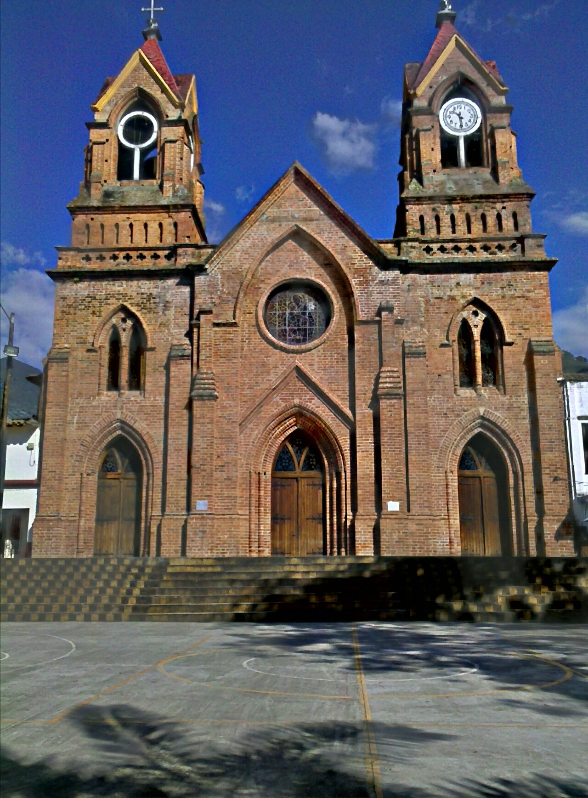
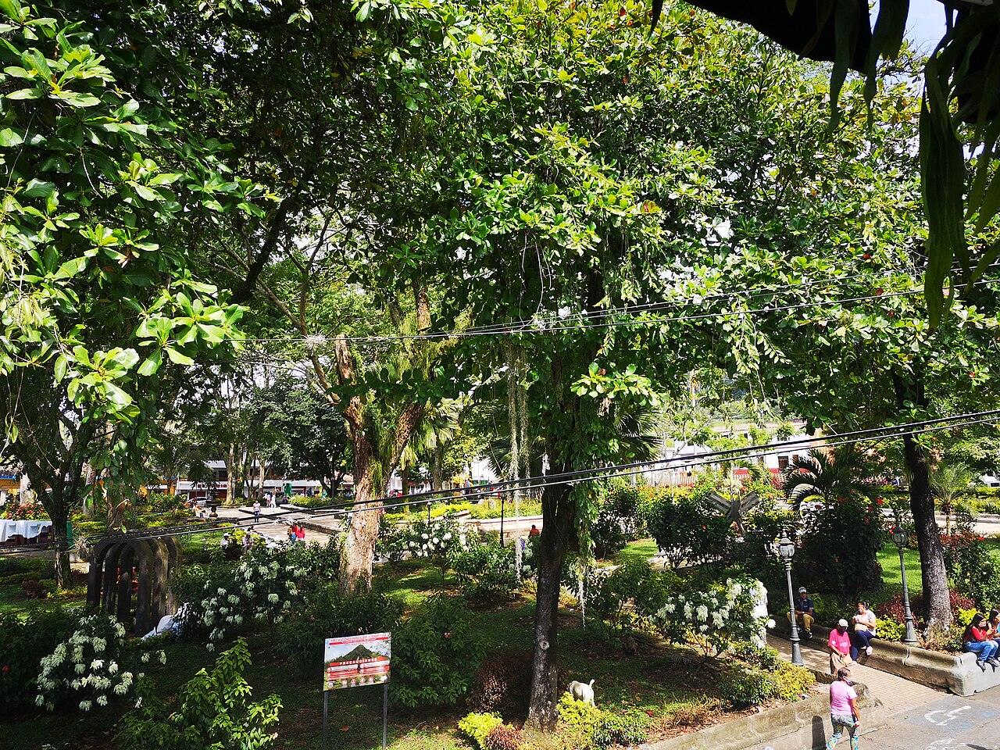

01
01Cerro Tusa
Consulta las visitas y recorridos con los responsables del parque.
Ubicar en el mapa ↗Suroeste · Antioquia, Colombia
Cerro Tusa, cultura cafetera y un pueblo para recorrer.
Qué conocer ↗Conocer su historia ↓¿Tienes un negocio en Venecia? Déjanos tus datos para participar ↗
Conoce el destino
Cerro Tusa es un referente natural y cultural de Venecia. Los caminos ancestrales y la vida rural del Suroeste forman parte de un territorio que invita a conocer su paisaje y su memoria.

Ideas para tu visita
Elige los lugares que despiertan tu curiosidad y organiza tu recorrido a tu ritmo.
01Consulta las visitas y recorridos con los responsables del parque.
Ubicar en el mapa ↗Conoce uno de los referentes arquitectónicos del pueblo.
Ubicar en el mapa ↗
03Recorre el centro y descubre su vida cotidiana.
Ubicar en el mapa ↗Imágenes redimensionadas; el encuadre puede variar según la pantalla. Las fotografías con licencia CC BY-SA conservan esa licencia.
Conecta las partes de tu viaje
Encuentra cómo moverte, dónde quedarte y comer, qué hacer y los servicios que necesitas. Explora a tu ritmo.
Aún no hay lugares publicados en este directorio.
Ubica los lugares que quieres conocer y consulta con cada sitio sus horarios, condiciones de ingreso y accesibilidad antes de organizar tu recorrido.
Ubicar Venecia en el mapa ↗No hay próximos eventos publicados.
¿Organizas un evento? Hablemos ↗Haz parte de Explorando Lugares
No te quedes por fuera.
Si tienes un hotel, restaurante, bar o tienda, ofreces transporte u organizas recorridos y actividades, queremos conocer tu negocio.
Déjanos tus datos. Te contactaremos para conversar sobre cómo incluir tu negocio en el portal.
Quiero participar ↗